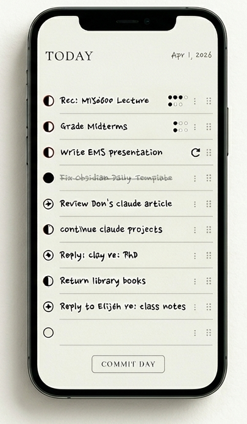

Accounting for a Life Well-Spent.
Time is the only asset that cannot be re-earned. Most productivity tools treat tasks as a never-ending stream; The Ledger treats them as an account of your responsibilities.
You are the steward of your hours; this is your balance sheet. By auditing your progress and closing the books each night, you ensure that your daily work is an intentional investment.
Audit your day, or the world will spend it for you.

Not every task is a simple checkbox. For deep work requiring multiple sessions, The Ledger uses a stacked tally system. Track iterative progress visually without losing the history of the task.
The app enforces a "close the books" workflow. At midnight, your day is committed to the Ledger. Unfinished work is carried forward as a liability, ensuring you start every morning with a clear account.
The interface is divided into functional cards: Today for immediate investment, Next for active priorities, and Someday for future speculation. Move tasks between them with a simple protocol menu.
Your records are your own. The Ledger stores all data locally in your browser and provides one-click Markdown and JSON exports. No accounts, no tracking, and no proprietary lock-in.
The Ledger is a digital homage to the clarity of paper. Its mechanics are inspired by proven index-card systems—most notably the Ugmonk Analog method and traditional Dash-Plus notation—which prioritize focus through physical constraints.
We have intentionally reproduced the productive friction of paper: a single daily sheet and a finite space for investment. It retains the tactile spirit of an index card, but unlike physical systems, it stays in your pocket—accessible wherever you are.